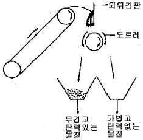
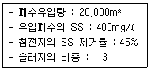
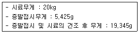
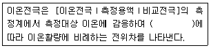
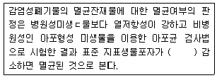
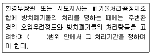
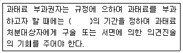
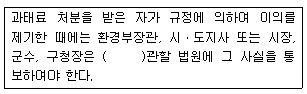

1과목: 폐기물 개론
1. 폐기물의 압축비(Compaction ratio)를 2에서 4로 증가시킬 경우 부피 감소율(Volume reduction rete)은 몇 배 증가하겠는가?
2. 쓰레기의 성상분석 절차로 가장 알맞은 것은?
3. 건식 전단파쇄기에 관한 설명으로 틀린 것은?
4. 폐기물 차량 총중량이 19945kg, 공차량 중량이 13725kg, 적재함의 크기 H:140cm, W:250cm, L:410cm 일 때 차량 적재계수(ton/m3)는?
5. 청소상태를 평가하는 방법 중 서비스를 받는 사람들의 만족도를 설문조사하여 계산하는 ‘사용자 만족도 지수’의 약자로 알맞은 것은?
6. 새로운 쓰레기 수집 시스템에 관한 설명으로 틀린 것은?
7. 함수율이 94%인 수거분뇨 200kL/d를 70% 함수율의 건조슬러지로 만들면 하루의 건조슬러지 생성량은? (단, 수거분뇨의 비중은 1.0 기준)
8. 인구 500000인 어느 도시의 쓰레기 발생량 중 가연성이 20%라고 한다. 쓰레기 발생량이 0.6kg/인ㆍ일 이고, 밀도는 0.8 ton/m3, 쓰레기차의 적재용량이 15m3일 때, 가연성 쓰레기를 운반하는데 필요한 차량은? (단, 차량은 1일 1회 운행 기준)
9. 도시 폐기물의 개략분석(Proximate analysis)항목과 가장 거리가 먼 것은?
10. 어떤 쓰레기의 입도를 분석한 바 입도누적곡선상의 10%, 40%, 60%, 90%의 입경이 각각 2, 5, 10, 20mm 이었다고 한다. 이 때 균등계수는?
11. 다음 그림은 어떠한 선별기를 나타낸 것인가?

12. 와전류분리에 대한 설명으로 가장 거리가 먼 것은?
13. 쓰레기 발생량 예측방법 중에서 최저 5년 이상의 과거 처리실적을 수식 model에 대입하여 과거의 경향을 가지고 장래를 예측하는 방법은?
14. 도시폐기물을 파쇄할 경우 X90=1.9cm로 하여(90% 이상을 1.9cm보다 작게 파쇄할 경우) Xo(특성입자)를 구한 값은? (단, Rosin Rammler 식 적용, n=1)
15. 우리나라 수거분뇨 내의 염소이온 농도로 가장 적절한 것은?
16. 쓰레기 발생량 및 성상변동에 관한 설명으로 틀린 것은?
17. 도시폐기물의 선별작업에서 가장 많이 사용되는 트롬멜스트린의 선별효율에 영향을 주는 인자와 가장 거리가 먼 것은?
18. LCA는 4부분으로 구성되어 있다. 다음 중 그 내용과 가장 거리가 먼 것은?
19. 쓰레기 발생량 조사방법에 관한 설명으로 틀린 것은?
20. 어느 도시의 폐기물 수거량이 2500000톤/년, 수거인부 3000명, 1일 작업시간 8시간, 년간 작업일수 340일 일 때 MHT는?
2과목: 폐기물 처리 기술
21. 폐기물처리의 고화처리방법 중 피막형성법(표면캡슐화법)의 장점에 속하는 것은?
22. 쓰레기와 하수처리장에서 얻어진 슬러지를 함께 매립하여한다. 쓰레기와 슬러지의 함수율은 각각 25%와 43%이다. 쓰레기와 슬러지를 중량비 8:2로 섞을 때 혼합체의 함수율은? (단, 비중은 1.0 기준)
23. 어느 지역에서 매립에 의해 처리하고자 하는 폐기물 양은 1일 150ton이다. 이를 도랑식 매립법(Trench Methods)에 의해 매립하고자 할 때 발생 폐기물 밀도 650kg/m3, 부피 감소율 45%, Trench 유효깊이는 1.5m, 매립면적 중 Trench 점유율이 80%라면, 1년간 소요 부지면적은?
24. 퇴비화의 장점과 가장 거리가 먼 것은?
25. 다음 슬러지의 처리공정 중 가장 합리적인 순서대로 배치된 것은? (A:농축, B:탈수, C:건조, D:개량, E:소화, F:매립)
26. 슬러지 수분 결합상태 중 탈수하기 가장 어려운 형태는?
27. 포도당(C6H12O6)만으로 된 유기물 1.5kg이 혐기성 상태에 완전분해된다면 생산되는 메탄의 용적(Sm3)은?
28. 폐기물의 퇴비화기술에서 퇴비화의 운전인자는 매우 중요한 역할을 한다. 퇴비화의 운전인자 중 Bulking Agent의 특성이 아닌 것은?
29. 다량의 분뇨를 일시에 소화조에 투입할 때 일반적으로 나타나는 장해라 볼 수 없는 것은?
30. 수분함량이 90%인 슬러지를 수분함량 50%로 낮추기 위해 톱밥을 첨가하였다면 슬러지 톤당 소요되는 톱밥의 양(kg)은? (단, 비중 1.0기준, 톱밥의 수분함량은 20%라 가정한다.)
31. 일반적으로 매립장 침출수생성에 가장 큰 영향을 미치는 인자는?
32. 슬러지 고형화 방법 중 시멘트기초법의 장점에 관한 설명으로 적절치 못한 것은?
33. 매립지의 표면차수막에 관한 설명으로 알맞지 않은 것은?
34. 침출수를 혐기성 공정을 이용하여 처리할 때 장점으로 틀린 것은?
35. 다음과 같은 조건의 침전지에서 1일 발생하는 슬러지의 부피는? (단, 기타사항은 고려하지 않음)

36. COD/TOC ＜2.0, BOD/COD＜1.0, COD는 500mg/L 미만인 매립연한 10년 이상된 곳에서 발생된 침출수의 처리공정의 효율성을 틀리게 나타낸 것은?
37. 합성차수막 중 CR의 장ㆍ단점에 관한 설명으로 틀린 것은?
38. 토양오염처리공법 중 토양증기추출법의 장점이 아닌 것은?
39. 점토의 수분함량 지표인 소성지수, 액성한계, 소성한계의 관계로 맞는 것은?
40. 침출수 처리를 위한 Fenton 산화법에 관한 설명으로 틀린 것은?
3과목: 폐기물 소각 및 열회수
41. 석탄의 탄화도가 증가하면 증가하는 것은?
42. 폐열회수를 위한 열교환기 중 연도에 설치하며, 보일러 전열면을 통하여 연소가스의 여열로 보일러 급수를 예열하여 보일러 효율을 높이는 장치는?
43. 옥탄(C8H18) 1mol을 완전연소 시킬 때 공기연료비를 중량비(kg공기/kg연료)로 적절히 나타낸 것은? (단, 표준상태 기준)
44. 프로필 알콜(C3H7OH)을 3kg 완전연소하는데 필요한 이론 공기량은?
45. Rotary kiln 소각로의 장점이 아닌 것은?
46. 연소실의 부피를 결정하려고 한다. 연소실의 부하율은 .36×105 Kcal/m3ㆍhr이고 발열량이 1,600Kcal/kg 인 쓰레기를 1일 400ton 소각시킬 때 소각로의 연소실부피(m3)는? (단, 소각로는 연속가동 한다.)
47. 소각로의 소각능률이 170kg/m2ㆍhr이며 쓰레기의 양이 10000kg/일이다. 1일 8시간 소각하면 로스톨의 면적은?
48. 유황 함량이 3%인 벙커C유 1ton을 연소시킬 경우 발생되는 SO2의 양은? (단, 황성분 전량이 SO2로 전환됨)
49. 밀도가 800kg/m3인 도시형 쓰레기 50ton을 소각한 결과 밀도가 1600kg/m3인 소각재가 15ton 발생 되었다면 소각시 용량 감소율(%)은?
50. 실제공기량과 이론공기량의 비를 m(과잉공기비)이라 한다. 연소 후 배기가스 중 5%의 O2가 함유되어 있다면 m은? (단, 기체연료의 연소, 완전연소로 가정함)
51. 쓰레기 소각에 비하여 열분해공정의 특징이라 볼 수 없는 것은?
52. 증기 터어빈에 대한 설명으로 옳지 않은 것은?
53. 쓰레기 고체연료화(RDF)소각로의 장단점에 대한 설명으로 틀린 것은?
54. 열교환기인 고열기에 대한 설명으로 틀린 것은?
55. 주성분이 C10H17O6N인 활성슬러지 폐기물을 소각처리하려고 한다. 폐기물 0.5kg당 필요한 이론적 공기의 무게는? (단, 공기중 산소량은 중량비로 23%)
56. 스토카식 소각시설에서의 총압력손실이 900mmH2O, 폐처리가스량 45000 Sm3/hr 효율이 65%인 송풍기의 소요동력은?
57. 고체 및 액체 연료일 경우 연소 이론 산소량을 중량으로 구하는 경우, 산출식으로 적절한 것은?
58. 다음 중 연소조절에 의한 질소산화물의 발생 저감 방법과 가장 거리가 먼 것은?
59. 고위발열량이 17000kcal/Sm3인 에탄(C2H6)을 연소시킬 때 이론 연소온도(℃)는? (단, 이론 연소가스량 21 Sm3/Sm3이며, 연소가스의 정압비열은 0.63kcal/Sm3ㆍ℃, 연소용공기, 연료온도는 15℃, 공기는 예열하지 않으며, 연소가스는 해리되지 않음)
60. 유동상식 소각로의 장단점에 대한 설명으로 틀린 것은?
4과목: 폐기물 공정시험기준(방법)
61. 폐기물이 5톤미만의 차량에 적재되어 있는 경우 적재 폐기물을 평면상에서 몇 등분하여 시료를 채취하는가?
62. 분쇄가 어려운 대형 고형화물의 경우 임의의 몇 개소에서 시료를 채취함을 기본으로 하는가?
63. 다음 중 원자흡광광도분석에서 비점이 낮은 원소의 측정에 사용할 수 있는 광원램프는?
64. 어떤 폐기물의 수분을 측정하기 위해 실험하였더니 다음과 같은 결과를 얻었다. 수분은 몇 %인가?

65. 다음 중 폐기물 공정시험방법에서 규정하고 있는 유기인화합물(가스크로마토그래피법)의 측정 성분이 아닌 것은?
66. 함수율이 90%인 시료인 경우, 용출시험결과에 시료중의 수분함량 보정을 위하여 곱하여야 하는 값은?
67. 다음은 이온전극법에 관한 설명이다. ()안에 알맞은 내용은?

68. 다음 중 가스크로마토그래피 분석에 사용하는 검출기와 가장 거리가 먼 것은?
69. 다음은 감염미생물(아포균검사법) 측정에 관한 내용이다. ()안에 알맞은 내용은?

70. 크롬의 원자흡광분석시 조연성-가연성 가스인 공기-아세틸렌 불꽃은 철, 니켈 등의 공존성분에 의한 간섭이 현저하다. 이 간섭은 1% 정도의 간섭억제제를 첨가하면 방해영향을 줄일 수 있는데 다음 물질 중 간섭억제제로 사용 되는 것은?
71. 다음은 구리의 시험법에 관한 기술이다. 옳지 않는 것은?
72. 대상폐기물의 양이 1500kg인 경우 시료의 최소 수는?
73. pH 값이 25℃에서 가장 높게 나타내는 pH 표준액은?
74. 원자흡광광도법에 의한 분석시 적용되는 검량선 작성과 정량법에 관한 내용 중 측정치가 흩어져 상쇄하기 쉬우므로 분석값의 재현성이 높아지고 정밀도가 향상되는 방법을 나타내는 것은?
75. 정량범위는 폐기물공정시럼방법에 따라 시험하는 경우 일반적으로 표준편차율 몇 % 이하에서 측정할 수 있는 정량하한과 정량상한의 범위를 말하는가?
76. 공정시험방법상 시안(CN)의 측정방법을 적절하게 짝지은 것은?
77. 기름성분에 관한 시험(중량법)에 관한 내용 중 정량범위기준으로 적절한 것은?
78. 다음은 용출시험방법의 용출조작을 나타낸 것이다. 옳지 않은 것은?
79. 원자흡광광도법에서 간섭이 발생하는 경우와 가장 거리가 먼 것은?
80. 흡광광도법에서 투과도 t가 0.5일 경우 흡광도는?
5과목: 폐기물 관계 법규
81. 음식물류 폐기물처리시설의 기술관리인의 자격기준으로 틀린 것은?
82. 폐기물처리업의 업종구분과 영업내용으로 알맞지 않는 것은?
83. 환경부령이 정하는 사업장폐기물배출자 [지정폐기물외의 사업장폐기물(폐지 및 고철(비철금속포함)을 제외함)을 배출하는자]의 기준으로 맞는 것은?
84. 폐기물처리시설 중 멸균분쇄시설의 정기검사시 검사항목이 아닌 것은?
85. 폐기물처리업의 변경허가를 받아야 할 중요사항과 가장 거리가 먼 것은?
86. 폐기물처리시설의 종류에 관한 설명으로 틀린 것은?
87. 폐기물처리시설의 폐쇄명령을 이행하지 아니한 자에 대한 벌칙기준은?
88. 관계공무원의 사무소 또는 사업장의 출입, 검사를 거부, 방해 또는 기피한 자에 대한 과태료 처분 기준은?
89. 다음 중 ()안에 알맞은 내용은?

90. 관리형 매립시설 침출수의 배출허용기준으로 알맞은 것은? (단, 가지역, 중크롬산칼륨법 기준 COD, 단위 mg/L)
91. 생활폐기물의 처리대행자에 해당되지 않는 자는?
92. ()안에 알맞은 내용은?

93. 지정폐기물의 종류에 관한 기준으로 틀린 것은?
94. 환경부령이 정하느 ㄴ규모의 설치신고대상 폐기물처리시설기준으로 틀린 것은?
95. 폐기물처리시설의 유지, 관리에 관한 기술관리의 대행을 할 수 있는 자로 틀린 것은?
96. 폐기물처리업의 허가를 받았거나 받고자 하는 자 외의 자가 폐기물처리시설을 설치하고자 할 때 환경부장관의 승인을 위하여 폐기물처리시설설치승인신청서에 첨부하여야 하는 서류로 틀린 것은? (단, 사업장폐기물배출자가 설치하는 경우가 아님)
97. 주변지역 영향조사대상 폐기물처리시설 기준으로 맞는 것은? (단, 동일 사업장에 1개의 소각시설이 있는 경우)
98. 사업장 폐기물을 공동처리할 수 있는 ‘환경부령이 정하는 2이상의 사업장폐기물배출자’로 틀린 것은?
99. 다음 중 지정폐기물을 배출하는 사업자가 지정폐기물을 위탁하여 처리하기 전에 환경부장관에게 제출하여 확인을 받아야 하는 서류가 아닌 것은?
100. 다음은 과태료처분에 관한 사항이다. ()안에 알맞은 내용은?
